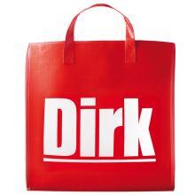
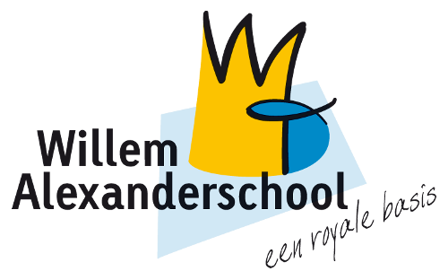
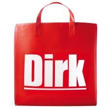
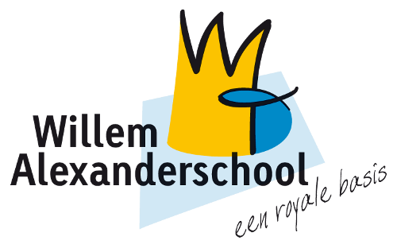

Ik ben Lennart Hoornaar, ik ben 17 jaar oud en ik woon in Hardinxveld-Giessendam. Ik volg de opleiding ICT en Media Beheer aan het Davinci College in Gorinchem. Ik hoop deze opleiding af te maken en een baan te kunnen krijgen in dit veld.
Ik hoop in de komende jaren voldoende kennis op te doen om een baan als ICT-Beheerder te kunnen krijgen. Eventueel hoop ik tevens door de stromen naar een HBO-Informatica opleiding, om mijn kennis in het veld van de ICT nog te vergroten. Verder ben ik graag bezig met computers en alles wat daar bijkomstig is.
Over de jaren heen heb ik best wel wat mee weten te pikken wat de ICT betreft. Ik kan goed over weg met de meeste computers en systemen. Verder heb ik door mijn werkervaring in de retail een aantal dingen mee gekregen op het gebied van professionaliteit en werkcultuur. Punctualiteit, werkdruk en deadlines zijn dingen waar ik al mee te maken heb gehad.
Basisschool Opleiding aan de Regenboogschool in Hardinxveld-Giessendam.
HAVO Opleiding aan het Lyceum Oudehoven in Gorinchem.
Stage: Lange Wei in Hardinxveld-Giessendam.
Stage: Prins Willem Alexander school in Sliedrecht.
Bijbaan: Dirk van den Broek Hardinxveld (Functie: Vulploegmedewerker)